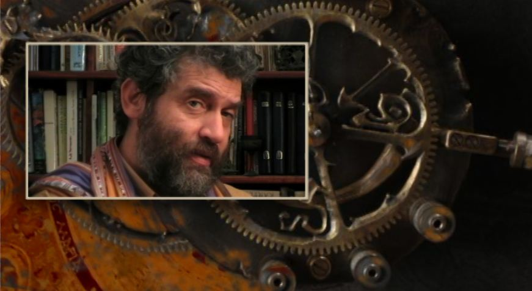
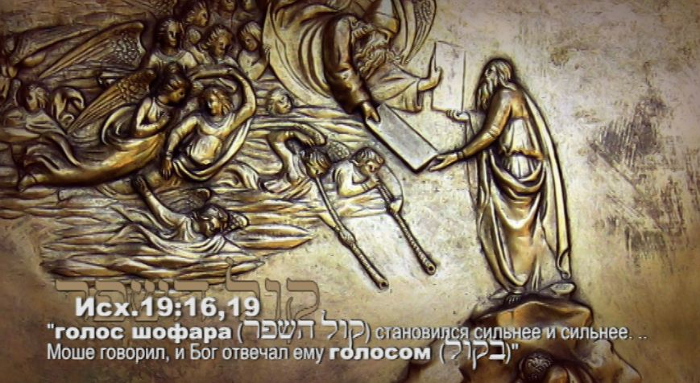

Воспоминание ТРУБЛЕНИЯ ШОФАРА
Впервые звук шофара наши отцы услышали в Синайской пустыне три с половиной тысячи лет назад. С тех пор этот звук сопровождает Израиля повсюду.
«Вспомни дни древние, помысли о летах прежних родов; спроси отца твоего, и он возвестит тебе, старцев твоих, и они скажут тебе...». (Втор.32:7) .
Праздник Воспоминания Звука Шофара уже в названии своём содержит повеление – помнить, вспоминать. «В седьмой месяц, в первый [день] месяца да будет у вас покой, Воспоминание Трубления Шофара. (Лев.23:24)
Это очень важный праздник, один из череды библейских еврейских праздников, о которых Творец сказал: «Вот праздники Мои, праздники Господни».
Песах (пасха), Шавуот (пятидесятница), Зихрон Труа (праздник труб), Йом Кипур (Судный день), Суккот (пр.Кущей), – все эти времена, связаны с воспоминаниями. Но Праздник Трубления - это день особых воспоминаний, оживляющих в нашей душе неповторимый, заставляющий трепетать сердце, звук шофара.
Синайское откровение.
Впервые звук шофара наши отцы услышали в Синайской пустыне три с половиной тысячи лет назад.
К наступлению утра третьего дня третьего месяца по исходе сынов Израиля из земли Египетской, они ожидали, как сойдет Господь перед глазами всего народа на гору.
(Исх.19:16-20) «И были громы и молнии, и густое облако над горою, и голос шофара (השופר קול - коль hа-шофар) весьма сильный; и вострепетал весь народ, бывший в стане… Гора же Синай вся дымилась от того, что Господь сошел на нее в огне; и восходил от нее дым, как дым из печи, и вся гора сильно колебалась; и голос шофара становился сильнее и сильнее. Моше говорил, и Бог отвечал ему голосом. И сошел Господь на гору Синай, на вершину горы, и призвал Господь Моше на вершину горы, и взошел Моше. В этом тексте мы впервые встречаем таинственное слово «шофар» и впервые слышим звук его голоса. Здесь он выступает, как музыкальный инструмент в руках Самого Бога, передавая дыхание Его уст. Не случайно в Писании по отношению к шофару многократно применяется слово «голос», как если бы речь шла о личности, а не о предмете.
«Голос шофара (קול השופר- коль hа-шофар) становился сильнее и сильнее. Моше говорил, и Бог отвечал ему голосом. (Исх.19:16,19). В этом стихе, слово «голос» относится и к шофару, и к Богу. Голос шофара и голос Бога сливались и звучали, как одно.




Это было великое уникальное событие, подобного которому не было ни до, ни после, даже до сего дня. Голосом Своим воззвал Бог, чтобы родить Себе народ. Гласом шофара Он призвал Израиля в Свою святость, быть народом отделенным для Него.
«Кто подобен народу Твоему, Израилю, единственному народу на земле, для которого приходил Бог, чтобы приобрести [его] Себе в народ и прославить Свое имя [и] совершить великое и страшное пред народом Твоим…?» (2Цар.7:23)
Шофар, трубивший с небес, нес в себе потрясающую, могучую силу: - силу преобразования, изменения, исправления. - в этом голосе сокрыта также великая сила пророчества.
Пророческий крик шофара пронзает время, простираясь далеко в будущее, побуждая человека говорить слова Божьи и вдохновляя его на творчество…
"Уру, уру ешаним мишинатейхем (ивр.: «Проснитесь, вы спящие, пробудитесь от сна), вспомните вашего Создателя и обратитесь к Нему!» - так понимал главное послание шофара Великий еврейский раввин и философ Рамбам.
Звуки Шофара внушают благоговение и затрагивают самые глубокие струны нашей души, призывают к сокрушению сердец и смирению. Они подобны стону и вздоху, рыданию и крику.
«Шофар издает простой звук, простой плач, лишенный всяких модуляций; поэтому он обладает способностью раскрывать душу. Никакие в мире слова не могут выразить чувства ребенка, плачущего ночью, зовущего мать. Шофар издает именно такой детский крик», - так говорит об этих звуках рабби Акива Татц.
*
Мидраш о даровании Торы при гласе Шофара.
«И сказали они Моше: говори ты с нами, и мы будем слушать, но чтобы не говорил с нами Бог, дабы нам не умереть». (Исх.20:19)
Мидраш передаёт нам волнующее древнее предание о том: И было… Со времени сотворения Адама, миновало двадцать шесть поколений. И вот, небо пришло в движение, ибо Творец ожидал возвещения жаждал заключить завет с народом Своим. Сыны Израиля омыли одежды и приготовили себя, ожидая назначенного дня. И сошёл на гору Синай окруженный воинством, в столпе огненном Всевышний. Земля дрожала и сотрясалась гора. Сыны Израиля услышали голос шофара. И становился он сильнее и сильнее, так что люди едва могли выносить его.
Народ видел поднимавшиеся к небу языки пламени, блеск молний и гору, дымящуюся, как печь. Но ужаснее того, они видели голос: Голос Шофара и Голос Бога. (Об этом свидетельствует Тора: «Весь народ видел громы и пламя, и звук трубный…» (Исх.20:18)).
Словно некие огненные субстанции, волны звука – Заповеди Всевышнего исходили из уст Его, облетая весь лагерь и водворяясь (представая) пред каждым. Десять речений обращались к народу Израиля в единственном, а не во множественном числе, чтобы каждый еврей знал – Тора обращена прямо к нему и выполнение её указаний - его обязанность личная. И после того обращался огненный образ на скрижалях каменных в письмена Божьи.
И было ужасно, и не возможно для человека столь сильное присутствие Божье так, что души покидали их тела. И молила Тора вернуть сынам Израиля жизнь, говоря: "Царь мира и Творец вселенной, Ты мечтал о дне этом, как о великой радости, неужели же обернётся он днём великого плача?"
И вернул Он души телам их. Но, оправившись сыны Иакова вновь ощутили страх перед Гласом Всевышнего и видением гласа шофара, и поспешно бежали до семидесяти семи стадий, в самый конец лагеря *(12 миль (прибл. 14 км)*. И ангелы воинства Его бережно возвращали их туда, где они находились ранее, к подножию горы, чтобы предстали они пред Творцом и были свидетелями Его Заповедей.
И ужасно напуганы были сыны Израиля и взмолились, чтобы не слышать им более гласа Господнего и не видеть вида трубления шофара, дабы Моше принял слова сии из уст Предвечного, и передал бы их народу.
Ап.Павел и д.Стефан, по всей вероятности, ссылаются, на этот невероятный мидраш, говоря о том, что Тора была дарована Израилю при служении ангелов..
(дьяк.Стефан: «вы, которые приняли закон при служении Ангелов …»
(Деян.7:53) и ап.Павел: «… закон… преподан через Ангелов, рукою посредника». (Гал.3:19))
***
20 И сказал Моисей народу: не бойтесь; Бог пришел, чтобы испытать вас и чтобы страх Его был пред лицем вашим, дабы вы не грешили. 21 И стоял народ вдали, а Моше вступил во мрак, где Бог.
И погружен был Израиль в великий страх и глубочайшее пророческое вдохновение. Там, у подножья г.Синай звуки шофара и слова Бога вложили в уста отцов наших великое пророческое прошение пред Всевышним. Впервые человек испрашивает себе Мессию, Посредника: «Дай нам того, кто сможет устоять пред Тобой и выслушав слова Твои, передать их нам, чтобы нам исполнить их». Они просили об Избавителе, который сойдя с неба научит народ правде. И это будет великим благословением не только потомкам Авраамовым, но и все племена земные благословятся в Нём.
И отвечал Моше народу: «так как ты просил у Господа Бога твоего при Хориве в день собрания, говоря: да не услышу впредь гласа Господа Бога моего и огня сего великого да не увижу более, дабы мне не умереть. И сказал мне Господь: хорошо то, что они говорили. (Втор.18:16)
Ему понравились их слова и они угодили Богу. Ему понравилась их просьба потому, что они просили по воле Его, от того, что от начала это было Его намерением – послать Своё Слово, Избавителя, Мессию, рождённого прежде всего творения.
Отцы наши просили в великом страхе и трепете, и они получили от Предвечного обещание. «И сказал мне Господь: хорошо то, что они говорили. Я воздвигну им Пророка из среды братьев их, такого как ты, и вложу слова Мои в уста Его, и Он будет говорить им все, что Я повелю Ему». (Втор.18:17-18) В звуке шофара, гремящем с неба там, в пустыне Синайской (в книге Шемот ( кн.Исход), в голосе совершенной жертвы (пророка Ишаяу ( Исайи53-ей гл.)), звучало великое обещание Всевышнего и надежда Израиля – УСЛЫШАТЬ голос грядущего Мессии и принять Его Искупителем и Освободителем, и как Первенца от Отца.
4 Шма Исраэль! Слушай, Израиль: Господь, Бог наш, Господь один есть; 5 и люби Господа, Бога твоего, всем сердцем твоим, и всею душею твоею и всеми силами твоими. 6 И да будут слова сии, которые Я заповедую тебе сегодня, в сердце твоем. (Втор.6:3-18)
«ШМА ИСРАЭЛЬ»– это главное провозглашение и молитва Израиля, произносимая евреями в минуты смертельной опасности и мира, бедствия и великой радости, даже до сего дня.
В древне-еврейском языке это слово ШМА (лишмоа) значит – слышать, вопринимать и повиноваться. «Слушай, Израиль!» - значит будь послушен, подчинись Господу Богу твоему. Шма!...
Дав Израилю повеление трубить, Бог повел также слушать голос шофара, слушать Его голос. Речь идёт особенном слушании, в котором желание услышать, открытое сердце и ожидание пред Творцом... Слушай Израиль!
* часть 1 * часть 2 * часть 4 * часть 5
***
см. на эту тему также мой фильм "Голос Шофара". Студия "Тора-Арт". Композитор Даниэль Круглов
***
Другие видео материалы о шофаре: исполнение заповеди трубления шофара - (см. здесь)
автор: Эфраим Калиш /TORAART/